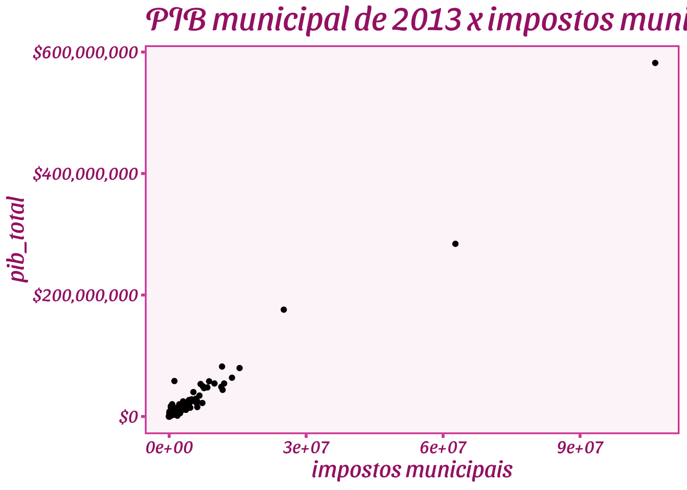

Capítulo 2 - Revisão de R
2.1 R e Rstudio
O R é uma linguagem de programação voltada para análise de dados. O Rstudio é uma IDE (interface de desenvolvimento), que nos ajuda a programar em R. No curso utilizaremos o Rstudio para facilitar programar em R.
Normalmente, iremos escrever um comando aqui no Script, clicar em executar (run) ou apertar ctrl + enter, e o Rstudio vai copiar o comando, colar no console e executá-los para nós.
2.3 Objetos no R
Tudo no R é um objeto. Isso significa que um número é um objeto.
[1] 3.141593
Isso significa que funções (comandos) também são objetos
[1] 6
function (…, na.rm = FALSE) .Primitive(“sum”)
E nós podemos criar nossos próprios objetos, dando os nomes que quisermos (exceto se já existe um objeto no R com aquele nome, como por exemplo o objeto “sum”).
[1] 10
2.4 Tipos de objetos
O R tem muitos tipos de objetos. Vamos listar aqui apenas os mais básicos.
2.5 Armazenando dados
Para armazenar dados, usualmente teremos 4 tipos de objetos: 1. vetor, 2. Matriz. 3. data.frame, 4. lista. Não vou falar de lista agora (nem de array, que é uma generalização da matriz para mais de duas dimensões).
2.5.1 Vetor
Um vetor é uma sequência de objetos.
[1] 1 2 3
[1] 1 2 3
[1] “Manoel” “Hugo” “Lia” “Juliana” “Jéssica”
[1] 1 2 3 2 3 1
os elementos de um vetor devem ser todos do mesmo tipo:
[1] “1”
2.5.2 Matriz
Uma matriz são vetores organizados por coluna, todas as colunas (vetores) só podem ser de um tipo, ou seja, não posso ter uma coluna numeric e outra de character, por exemplo.
| 1 | 4 |
| 2 | 5 |
| 3 | 6 |
2.5.3 Data Frame
O data.frame é uma tabela/planilha, e é onde normalmente armazenamos nossos bancos de dados no R.
| x | y |
|---|---|
| 1 | a |
| 2 | b |
| 3 | c |
2.5.3.1 datas
[1] “2020-10-23” “2020-10-24” “2020-10-25” “2020-10-26” “2020-10-27” “2020-10-28” “2020-10-29” “2020-10-30” “2020-10-31” “2020-11-01”
## criando data de forma repetitiva e tediosa. O que queremos evitar!
minha_data <- c(as.Date('2009-01-01'), as.Date('2009-01-02'), as.Date('2009-01-03'),
as.Date('2009-01-04'), as.Date('2009-01-05'), as.Date('2009-01-06'),
as.Date('2009-01-07'), as.Date('2009-01-08'), as.Date('2009-01-09'),
as.Date('2009-01-10'))
acoes <- data.frame(
tempo = minha_data,
X = rnorm(10, 0, 1),
Y = rnorm(10, 0, 2),
Z = rnorm(10, 0, 4)
)| tempo | X | Y | Z |
|---|---|---|---|
| 2009-01-01 | 1.7940745 | -0.7488775 | -0.8906052 |
| 2009-01-02 | -1.3645489 | -1.2088000 | 3.0725101 |
| 2009-01-03 | -0.7074400 | 2.4062541 | 1.5518146 |
| 2009-01-04 | -0.5562843 | 1.5377465 | 2.4365321 |
| 2009-01-05 | -0.3100811 | 0.4767020 | 2.3620744 |
| 2009-01-06 | -0.3761793 | -2.8300563 | -1.7405630 |
| 2009-01-07 | 0.4585260 | 5.8675488 | -1.0030796 |
| 2009-01-08 | -1.2611491 | 1.8700515 | -3.7050775 |
| 2009-01-09 | -0.5274652 | 2.4677690 | 4.3497432 |
| 2009-01-10 | -0.5568142 | -3.7827694 | -7.7758369 |
# criando data.frame de maneira mais inteligente
acoes <- data.frame(
tempo = as.Date('2009-01-01') + 0:9,
X = rnorm(10, 0, 1),
Y = rnorm(10, 0, 2),
Z = rnorm(10, 0, 4)
)| tempo | X | Y | Z |
|---|---|---|---|
| 2009-01-01 | -0.2806204 | -1.2341477 | -8.0296601 |
| 2009-01-02 | 0.8120776 | -0.5247450 | 3.0720085 |
| 2009-01-03 | -0.2077037 | 1.8246943 | 1.6230453 |
| 2009-01-04 | 1.4507573 | 2.2472212 | -3.3268635 |
| 2009-01-05 | 0.8414932 | -1.2070394 | 3.8323031 |
| 2009-01-06 | -0.8657378 | 0.1106468 | 7.2428770 |
| 2009-01-07 | -0.0598778 | -2.0013169 | -10.2000579 |
| 2009-01-08 | 0.0115312 | -1.5163577 | 4.6010203 |
| 2009-01-09 | 0.2691115 | -1.2228716 | 4.9115746 |
| 2009-01-10 | -0.5281605 | -2.6334445 | 0.6084127 |
2.6 Bibliotecas/pacotes
O R permite que a gente importe comandos que não vêm por padrão no R. Em gerla esses comandos es~toa agrupados sob um pacote. PAra usar esses comandos, primeiro a gente instala o pacote, e depois carrega a biblioteca.
2.7 importando dados
Para importar dados, vamos usar a bilioteca “data.table” Então, instalem ela se ainda não instalaram (usando o comando install.packages(“data.table”)) E depois carreguem a biblioteca: library(data.table)
Para importar, usaremos o comando fread do pacote data.table.
# vamos importar uma base de dados de pib municipais de 2013, do IBGE
# o arquivo está em formato RDS, que é um formato do R, e disponível no meu github. Para importá-lo direto no R, vamos ler o arquivo com a função url e depois import´-lo com a função readRDS.
pib_cid <- readRDS(url("https://github.com/mgaldino/book-regression/raw/main/dados/pib_cid.RDS"))
# para visualizar os dados que forma importados, temos várias funções
# glimpse, head e View
library(dplyr) # para glimpse
# glimpse(pib_cid)
# head(pib_cid)
# View(pib_cid)2.8 Data wrangling
Para manipulação, limpeza e processamento de dados, iremos utilizar o chamado “tidyverse”.
library(tidyverse)
# digamos que quero o pib total médio e o pib per capita médio
# basta usar o comando summarise, que resume os dados e escolher a função mean.
df <- pib_cid %>%
summarise(pib_medio = mean(pib_total),
pib_per_capita_medio = mean(pib_per_capita))
kable(df)| pib_medio | pib_per_capita_medio |
|---|---|
| 957202.7 | 17388.86 |
# se eu quiser a soma dos pibs municipais
df <- pib_cid %>%
summarise(soma_pib = sum(pib_total)) %>%
head()
kable(df)| soma_pib |
|---|
| 5331618957 |
# maior e menos pibs e pibs per capita entre municípios
df <- pib_cid %>%
summarise(pib_max = max(pib_total),
pib_min = min(pib_total),
pib_per_capita_max = max(pib_per_capita),
pib_per_capita_min = min(pib_per_capita)) %>%
head()
kable(df)| pib_max | pib_min | pib_per_capita_max | pib_per_capita_min |
|---|---|---|---|
| 582079726 | 4198.94 | 717343.7 | 301.6 |
# se eu quiser apenas dos municípios od estado de SP?
# basta filtrar pelo estado de SP, com o comando filter
df <- pib_cid %>%
filter(sigla_uf == "SP") %>%
summarise(soma_pib = sum(pib_total)) %>%
head()
kable(df)| soma_pib |
|---|
| 1715238417 |
df <- pib_cid %>%
filter(sigla_uf == "SP") %>%
summarise(pib_medio = mean(pib_total),
pib_per_capita_medio = mean(pib_per_capita)) %>%
head()
kable(df)| pib_medio | pib_per_capita_medio |
|---|---|
| 2659284 | 24827.14 |
# se eu quiser esse cálculo por uf (or cada umas das ufs?)
# Aí é melhor aguprar por uf
# ideia é: split by, apply (function), combine (summarise?)
df <- pib_cid %>%
group_by(sigla_uf) %>%
summarise(pib_medio = mean(pib_total),
pib_per_capita_medio = mean(pib_per_capita)) %>%
head()
kable(df)| sigla_uf | pib_medio | pib_per_capita_medio |
|---|---|---|
| AC | 521542.3 | 11450.979 |
| AL | 365515.0 | 7931.148 |
| AM | 1339536.0 | 8975.314 |
| AP | 797717.9 | 14947.829 |
| BA | 491233.3 | 8814.841 |
| CE | 592590.0 | 7157.360 |
# agora, quero criar uma nova variável, que é o pib estadual
df <- pib_cid %>%
group_by(sigla_uf) %>%
mutate(pib_uf = sum(pib_total))
df <- head(df)
kable(df)| ano | codigo_regiao | nome_regiao | codigo_uf | sigla_uf | nome_uf | cod_municipio | nome_munic | nome_metro | codigo_meso | nome_meso | codigo_micro | nome_micro | codigo_reg_geo_imediata | nome_reg_geo_imediata | mun_reg_geo_imediata | codigo_reg_geo_intermediaria | nome_reg_geo_intermediaria | mun_reg_geo_intermediaria | codigo_concentracao_urbana | nome_concentracao_urbana | tipo_concentracao_urbana | codigo_arranjo_populacional | nome_arranjo_populacional | hierarquia_urbana | hierarquia_urbana_principais | codigo_regiao_rural | nome_regiao_rural | regiao_rural_classificacao | amazonia_legal | semiarido | cidade_de_sao_paulo | vab_agropecuaria | vab_industria | vab_servicos_exclusivo | vab_adm_publica | vab_total | impostos | pib_total | pib_per_capita | atividade_vab1 | atividade_vab2 | atividade_vab3 | pib_uf |
|---|---|---|---|---|---|---|---|---|---|---|---|---|---|---|---|---|---|---|---|---|---|---|---|---|---|---|---|---|---|---|---|---|---|---|---|---|---|---|---|---|---|---|---|
| 2013 | 1 | Norte | 11 | RO | Rondônia | 1100015 | Alta Floresta D’Oeste | NA | 1102 | Leste Rondoniense | 11006 | Cacoal | 110005 | Cacoal | do Entorno | 1102 | Ji-Paraná | do Entorno | NA | NA | NA | NA | NA | Centro Local | Centro Local | 1101 | Região Rural da Capital Regional de Porto Velho | Região Rural de Capital Regional | Sim | Não | Não | 110850.84 | 20336.994 | 73025.07 | 120335.59 | 324548.50 | 16776.193 | 341324.69 | 13266.66 | Administração, defesa, educação e saúde públicas e seguridade social | Pecuária, inclusive apoio à pecuária | Demais serviços | 31121413 |
| 2013 | 1 | Norte | 11 | RO | Rondônia | 1100023 | Ariquemes | NA | 1102 | Leste Rondoniense | 11003 | Ariquemes | 110002 | Ariquemes | Polo | 1101 | Porto Velho | do Entorno | NA | NA | NA | NA | NA | Centro Sub-regional B | Centro Sub-regional | 1101 | Região Rural da Capital Regional de Porto Velho | Região Rural de Capital Regional | Sim | Não | Não | 93249.75 | 354733.212 | 694832.17 | 466732.80 | 1609547.93 | 190304.571 | 1799852.51 | 17772.99 | Administração, defesa, educação e saúde públicas e seguridade social | Demais serviços | Comércio e reparação de veículos automotores e motocicletas | 31121413 |
| 2013 | 1 | Norte | 11 | RO | Rondônia | 1100031 | Cabixi | NA | 1102 | Leste Rondoniense | 11008 | Colorado do Oeste | 110006 | Vilhena | do Entorno | 1102 | Ji-Paraná | do Entorno | NA | NA | NA | NA | NA | Centro Local | Centro Local | 1101 | Região Rural da Capital Regional de Porto Velho | Região Rural de Capital Regional | Sim | Não | Não | 38259.43 | 3412.205 | 17787.45 | 32838.64 | 92297.72 | 4066.819 | 96364.54 | 14836.73 | Administração, defesa, educação e saúde públicas e seguridade social | Pecuária, inclusive apoio à pecuária | Agricultura, inclusive apoio à agricultura e a pós colheita | 31121413 |
| 2013 | 1 | Norte | 11 | RO | Rondônia | 1100049 | Cacoal | NA | 1102 | Leste Rondoniense | 11006 | Cacoal | 110005 | Cacoal | Polo | 1102 | Ji-Paraná | do Entorno | NA | NA | NA | NA | NA | Centro Sub-regional B | Centro Sub-regional | 5105 | Região Rural do Centro Sub-regional de Vilhena (RO) e Cacoal (RO) | Região Rural de Centro Sub-regional | Sim | Não | Não | 140658.88 | 140288.317 | 599519.83 | 395842.23 | 1276309.26 | 156944.241 | 1433253.51 | 16692.33 | Administração, defesa, educação e saúde públicas e seguridade social | Demais serviços | Comércio e reparação de veículos automotores e motocicletas | 31121413 |
| 2013 | 1 | Norte | 11 | RO | Rondônia | 1100056 | Cerejeiras | NA | 1102 | Leste Rondoniense | 11008 | Colorado do Oeste | 110006 | Vilhena | do Entorno | 1102 | Ji-Paraná | do Entorno | NA | NA | NA | NA | NA | Centro de Zona B | Centro de Zona | 1101 | Região Rural da Capital Regional de Porto Velho | Região Rural de Capital Regional | Sim | Não | Não | 45153.64 | 19889.818 | 149569.44 | 83089.55 | 297702.45 | 55567.232 | 353269.68 | 19581.49 | Administração, defesa, educação e saúde públicas e seguridade social | Comércio e reparação de veículos automotores e motocicletas | Demais serviços | 31121413 |
| 2013 | 1 | Norte | 11 | RO | Rondônia | 1100064 | Colorado do Oeste | NA | 1102 | Leste Rondoniense | 11008 | Colorado do Oeste | 110006 | Vilhena | do Entorno | 1102 | Ji-Paraná | do Entorno | NA | NA | NA | NA | NA | Centro Local | Centro Local | 1101 | Região Rural da Capital Regional de Porto Velho | Região Rural de Capital Regional | Sim | Não | Não | 51029.59 | 23179.131 | 66099.41 | 86090.50 | 226398.63 | 16368.611 | 242767.24 | 12650.72 | Administração, defesa, educação e saúde públicas e seguridade social | Demais serviços | Pecuária, inclusive apoio à pecuária | 31121413 |
Coisas estranhas. O maior pib per capita municipal deu muito alto. vamos ver qual município é? Vamos filtrar e depois selecionar apenas algumas colunas
# agora, quero criar uma nova variável, que é o pib estadual
df <- pib_cid %>%
filter(pib_per_capita > 700000) %>%
dplyr::select(sigla_uf, nome_munic, pib_per_capita, pib_total) %>%
head()
kable(df)| sigla_uf | nome_munic | pib_per_capita | pib_total |
|---|---|---|---|
| ES | Presidente Kennedy | 717343.7 | 7984035 |
Vamos entrar na Wiki do município ou perguntar pra chatGPT o que explica isso aí? Veremos que “faz sentido”, embora na verdade não faça.
Exercício em sala de aula: veja os impostos desse município.
2.9 Visualização
Para visualizarmos os dados com gráficos, utilizaremos a biblioteca ggplot2
A lgócia geral de um grtáfico com ggplot2 é como no exemplo acima. Primeiro passamos as variáveis por meio do comando ggplot, dentro de aes (de aesthetics), depois combinamos com o tipo de plot que queremos faze,r nesse caso, pontos, com geom_point. É possívle customizar o gráfico para ele ficar mais bonito. Vamos fazer isso agora.
# gráficos mais bonitos
pib_cid %>%
ggplot(aes(y=pib_total, x=impostos)) + geom_point() +
scale_y_continuous(labels = scales::dollar) + theme_light() + theme(text=element_text(size=20)) +
xlab("impostos municipais") + ggtitle("PIB municipal de 2013 x impostos municipais")Podemos usar vários temas feitos pela comunidade. Por exemplo, Barbie:
# gráficos mais bonitos
# install.packages("remotes")
#remotes::install_github("MatthewBJane/theme_park")
library(ThemePark)
pib_cid %>%
ggplot(aes(y=pib_total, x=impostos)) + geom_point() +
scale_y_continuous(labels = scales::dollar) + theme(text=element_text(size=20)) + theme_barbie() +
xlab("impostos municipais") + ggtitle("PIB municipal de 2013 x impostos municipais")
Vocês podem ver outros temas de filmes no github do autor do pacote: https://github.com/MatthewBJane/theme_park E, claro, há muito mais na internet.
Para fazer outro tipo de gráfico, é só variar o geom. Por exemplo, um histograma do PIB per capita.